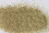

|
|
(For further information on spectroscopy, see:
http://speclab.cr.usgs.gov)
TITLE: Andradite HS111 Garnet DESCRIPT
DOCUMENTATION_FORMAT: MINERAL
SAMPLE_ID: HS111
MINERAL_TYPE: Nesosilicate
MINERAL: Andradite (Garnet group)
FORMULA: Ca3(Fe+3)2(SiO4)3
FORMULA_HTML: Ca3Fe+32(SiO4)3
COLLECTION_LOCALITY: Graham County, Arizona
ORIGINAL_DONOR: Wards Scientific
CURRENT_SAMPLE_LOCATION: USGS Denver Spectroscopy Laboratory
ULTIMATE_SAMPLE_LOCATION: USGS Denver Spectroscopy Laboratory
SAMPLE_DESCRIPTION:
Forms series with Grossular and with Schorlomite.
Under a hand lens the sample appears brown. Individual grains have varying shades of brown with an overall "salt and pepper" effect. The visible and near-IR spectrum shows spectrally pure andradite.
IMAGE_OF_SAMPLE:

END_SAMPLE_DESCRIPTION.
XRD_ANALYSIS:
Andradite + Quartz - by Norma Vergo
END_XRD_ANALYSIS.
COMPOSITIONAL_ANALYSIS_TYPE: None # XRF, EM(WDS), ICP(Trace), WChem
COMPOSITION_TRACE: None
COMPOSITION_DISCUSSION:
None
END_COMPOSITION_DISCUSSION.
MICROSCOPIC_EXAMINATION:
Optical examination gives the following mineral mode:
85 vol% andradite
15 vol% Fe-stained mineral or andradite
avg. grain size = 270µm
Conchoidally fractured andradite grains some of which are partially Fe-stain coated. Entire grains Fe-stained may be different phase or andradite. G. Swayze
END_MICROSCOPIC_EXAMINATION.
SPECTROSCOPIC_DISCUSSION:
END_SPECTROSCOPIC_DISCUSSION.
SPECTRAL_PURITY: 1b2b3b4b # 1= 0.2-3, 2= 1.5-6, 3= 6-25, 4= 20-150 microns
| LIB_SPECTRA_HED: | where | Wave Range | Av_Rs_Pwr | Comment |
|---|---|---|---|---|
| LIB_SPECTRA: | splib04a r 378 | 0.2-3.0µm | 200 | g.s.= |
| LIB_SPECTRA: | splib05a r 986 | 0.2-3.0µm | 200 | g.s.= |
| LIB_SPECTRA: | splib06a r 2203 | g.s.= | ||
| LIB_SPECTRA: | splib06a r 2215 | g.s.= |
{kind=link}